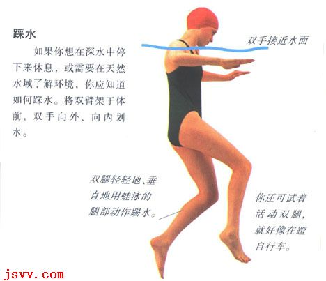
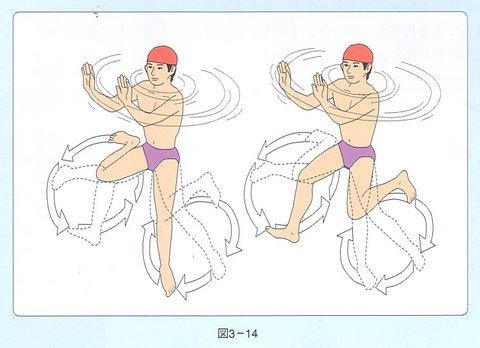

踩水
- 踩水练习方法视频：http://v.youku.com/v_show/id_XMTM3MzUxNzA4.html?f=17084325
- 视频: 170单脚踩水与双脚踩水Go Swim: http://v.youku.com/v_show/id_XMzA0OTIwNDQw==.html
踩水也称“立泳”。实用游泳姿式之一。借助两腿向下踩蹬，使人体浮立水中。踩蹬时，两腿可同时也可轮流进行，两手则在胸前做横向“摸水”动作。常用于持物渡江河、武装泅渡、救护溺水者等。
必须特别强调立泳的重要性，因为在欧美国家在教学游泳时非常注重立泳，通常他们会让小孩先学会立泳，才开始学习其他标准的游泳姿势，因为他们非常强调溺水自救的概念，而立泳在自救或救人方面都具有重要的地位。况且在学习标准游泳姿势前让小孩就学习立泳也有助于小朋友对水感的敏锐度。
不用担心，踩水嘛，就像走路，谁规定走路还要有一套标准姿势！随便啊，不用紧张，要蛋定！但是大家知道踩水主要是在脚上。
没有固定动作，随便踩，蛙泳腿也行，蹬自行车什么的也行，左右乱蹬也行，前后胡踹也可以，用手也行，不用手也行。
踩水踩的好，踩的花样翻出，踩的轻松自如，说明水中的感觉到了一定层次了。
人直立水中，两腿交替上提下踩，保持身体不沉并能前进，是一种游泳方法。踩水主要分为：
- 剪式踩水
- 蛙式踩水(跟游蛙泳一样，两只脚收起同时向下外蹬出，蹬出之后不需要夹腿，收起再蹬。)
- 侧踏式踩水(车轮式踩水/单车脚，像踩自行车一样两只脚轮流交替向下踩水。

不过无论用哪种方式踩水，都要合乎基本的游泳原则，手腿的动作要柔和，手脚的节奏要互相配合，使上下起伏的幅度减到最小，平稳的浮在水中。
踩水的形式很多，比较常见的是采用类似蛙泳的动作，但是身体与水面所构成的角度较大，接近于直立。
蛙式踩水
初学游泳者对于腿部动作通常不怎么熟悉，手的摇撸动作面积可以大一些，比较容易浮起来，做的时候像擦桌子一样，其实又跟蛙式的划手相似，所以这样的动作比较是属于“意会而不能言传的”，多加练习当然会是比较好的。
与其说划圈，不如说以弧形动线蹬水更为恰当，其实其踩水动作和蛙泳腿极为类似。差别主要在一个水平进行，一个垂直进行。若是左右两脚轮流以蛙泳腿分别踩水（效果更好）的话，那么请看附图：

请注意附图的脚丫子翻脚，如此画圈进行蹬腿，再配合手部水平切水，你的踩水就会做得很出色。
身体姿势
整个身体几乎垂直于水面，稍前倾，头部始终露在水面，下颌接近水面。
腿部动作
踩水的腿部动作几乎和蛙泳腿一样，只是需要注意的是它的收蹬腿的幅度要小。收腿时，膝关节可外翻，蹬腿时膝关节向内扣压，同时小腿和脚内侧蹬夹，两腿尚未蹬直并拢即开始做第二次的收腿动作。动作熟练之后，也可进行两腿交替蹬夹水的动作技术。
臂部动作
两臂稍弯曲，在体侧前做向外、向内的摸压水的动作，动作幅度不能太大。向外时，手掌心向外侧下，有分开水的感觉；向内时，手掌心向内侧下，有挤水的感觉。向内摸压至肩宽距离即分开。两手掌摸压水的路线呈双“︵”弧形。
臂、腿、呼吸配合
臂腿的动作配合要连贯、协调，一般是两腿做蹬夹水时，两臂向外做摸压水的动作，收腿时，则向内摸压，呼吸要跟随臂腿自然进行。
蹬夹水（臂向外）时吸气；收腿（臂向内）时呼气。可以一个动作一次呼吸，也可以几个动作做一次呼吸。
用踩水游进时，可以采用身体的不同侧向以及蹬夹和摸压的方向来改变游进的方向。向前，及身体稍前倾，脚稍向侧后蹬夹水，两臂稍向后拨水，反之亦然。
踩水动作熟练后，仅用双腿的蹬踩动作也可是身体浮起，那么单手或双手就可以在水面上自由持物一种游泳方法，人直立深水中，两腿交替上抬下踩，使身体不下沉，并且能前进。
侧踏式踩水
简单点说就是就像骑自行车那样，但手跟脚动作是不一样的，脚就像骑自行车那样，即一上一下踩，而手就是左右左右的摆，但是在一个平面的，都是进行就OK了，姿势不是站点，是弓形的。
立漂
会仰漂的朋友多练几次即会。刚练时双手要平放在水面（环抱平放也可），这样有利于平衡；要收腹，胸部要尽量吸足气。
鼻吸鼻呼即可，能立漂十分钟就能立漂一、二个小时，没有分别的。立漂比仰漂还舒服，最舒服是斜漂。